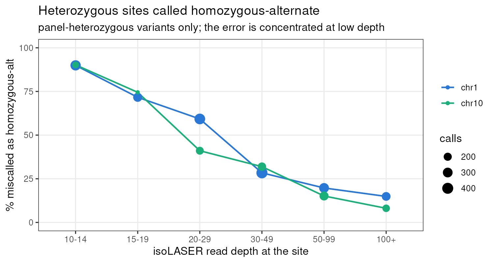

Checking isoLASER’s variant calls against our genotypes
XSun
2026-09-24
Last updated: 2026-09-24
Checks: 6 1
Knit directory: long_read_rna/
This reproducible R Markdown analysis was created with workflowr (version 1.7.1). The Checks tab describes the reproducibility checks that were applied when the results were created. The Past versions tab lists the development history.
The R Markdown file has unstaged changes. To know which version of
the R Markdown file created these results, you’ll want to first commit
it to the Git repo. If you’re still working on the analysis, you can
ignore this warning. When you’re finished, you can run
wflow_publish to commit the R Markdown file and build the
HTML.
Great job! The global environment was empty. Objects defined in the global environment can affect the analysis in your R Markdown file in unknown ways. For reproduciblity it’s best to always run the code in an empty environment.
The command set.seed(20260908) was run prior to running
the code in the R Markdown file. Setting a seed ensures that any results
that rely on randomness, e.g. subsampling or permutations, are
reproducible.
Great job! Recording the operating system, R version, and package versions is critical for reproducibility.
Nice! There were no cached chunks for this analysis, so you can be confident that you successfully produced the results during this run.
Great job! Using relative paths to the files within your workflowr project makes it easier to run your code on other machines.
Great! You are using Git for version control. Tracking code development and connecting the code version to the results is critical for reproducibility.
The results in this page were generated with repository version 845c843. See the Past versions tab to see a history of the changes made to the R Markdown and HTML files.
Note that you need to be careful to ensure that all relevant files for
the analysis have been committed to Git prior to generating the results
(you can use wflow_publish or
wflow_git_commit). workflowr only checks the R Markdown
file, but you know if there are other scripts or data files that it
depends on. Below is the status of the Git repository when the results
were generated:
Unstaged changes:
Modified: analysis/index.Rmd
Modified: analysis/isolaser_variants.Rmd
Note that any generated files, e.g. HTML, png, CSS, etc., are not included in this status report because it is ok for generated content to have uncommitted changes.
These are the previous versions of the repository in which changes were
made to the R Markdown (analysis/isolaser_variants.Rmd) and
HTML (docs/isolaser_variants.html) files. If you’ve
configured a remote Git repository (see ?wflow_git_remote),
click on the hyperlinks in the table below to view the files as they
were in that past version.
| File | Version | Author | Date | Message |
|---|---|---|---|---|
| Rmd | 77348fb | XSun | 2026-09-23 | update |
| html | 77348fb | XSun | 2026-09-23 | update |
isoLASER starts by calling variants and phasing reads onto haplotypes. Every allele-specific result downstream rests on those variants being real, so it is worth checking them against genotypes we already hold for the same four donors.
The headline: the variants isoLASER finds are overwhelmingly real, but its heterozygous-versus-homozygous calls are not reliable at low read depth. That distinction matters, because phasing runs on heterozygous sites.
What was compared
isoLASER was run on chr1 and chr10, separately for each donor and each timepoint — 24 runs. chr1 carries TTLL7 and chr10 carries CREM.
The reference is the imputed 100-line genotype panel,
/project/xinhe/lifan/neuron_stim/zicheng_100lines_all_snp_sorted.vcf.gz,
from the Michigan Imputation Server using the TOPMed r2 panel. It holds
597,637 chr1 sites and 402,137 chr10 sites.
Two checks before comparing anything.
The panel is GRCh38, the same build as the long-read data. Verified against known SNP positions rather than read off the header, because the builds differ by hundreds of kilobases and a mismatch would silently produce near-zero agreement.
| SNP | position in panel | GRCh37 | GRCh38 |
|---|---|---|---|
| rs429358 | 44,908,684 | 45,411,941 | 44,908,684 |
| rs7412 | 44,908,822 | 45,412,079 | 44,908,822 |
| rs4988235 | 135,851,076 | 136,608,646 | 135,851,076 |
All four donors are in the panel. Its 100 samples
are named 58 CD_xx and 42 CW#####; ours are
CD_21, CD_31, CD_36 and CD_48.
The panel ships without a tabix index, so we index a symlink in our
own stage folder and write nothing to the shared directory. The
extraction is checked against the panel’s own variant count — an earlier
attempt was truncated by a stray process kill and still passed
gzip -t, because the stream had been flushed at a clean
block boundary.
How many variants does the panel validate?
The answer depends on what you count, so all three levels are given. A variant seen in four donors at three timepoints contributes twelve call-level rows but one distinct variant.
Distinct genomic variants
Collapsing donors and timepoints, so each position counts once:
| count | % of called | |
|---|---|---|
| PASS single-nucleotide calls | 3,191 | |
| present in the panel | 1,478 | 46.3 |
| adjudicable (in panel, R² ≥ 0.8) | 1,366 | 42.8 |
| panel confirms the variant is really there | 1,309 | 41.0 |
| panel also agrees on the exact genotype | 845 | 26.5 |
1,309 variants are validated in the sense that matters most — an independent genotype source says that variant exists in that donor. Of those, 845 also agree on heterozygous versus homozygous.
The same calls at two other units
| unit | calls | in panel | confirmed | exact genotype |
|---|---|---|---|---|
| call (donor × timepoint × site) | 11,573 | 5,261 (45.5%) | 4,576 | 3,223 |
| donor–variant (timepoints collapsed) | 6,627 | 2,828 (42.7%) | 2,474 | 1,687 |
| distinct variant | 3,191 | 1,478 (46.3%) | 1,309 | 845 |
Per run
| Chrom | Time | Calls | In panel | % in panel | Adjudicable | Confirmed | % confirmed | % exact genotype |
|---|---|---|---|---|---|---|---|---|
| chr1 | 0hr | 2282 | 884 | 38.7 | 769 | 746 | 97.0 | 66.6 |
| chr1 | 1hr | 2719 | 1261 | 46.4 | 1108 | 1069 | 96.5 | 65.2 |
| chr1 | 6hr | 2710 | 1378 | 50.8 | 1219 | 1189 | 97.5 | 67.7 |
| chr10 | 0hr | 1008 | 434 | 43.1 | 403 | 394 | 97.8 | 73.9 |
| chr10 | 1hr | 1452 | 658 | 45.3 | 609 | 593 | 97.4 | 72.1 |
| chr10 | 6hr | 1402 | 646 | 46.1 | 602 | 585 | 97.2 | 70.9 |
The rise in panel overlap from 0 hr to 6 hr on chr1 (38.7% to 50.8%) tracks read depth, not biology: deeper libraries reach more of the common variants the panel can represent.
Every match is an exact allele match. Of the calls landing on a panel position, all agree on both the reference and the alternate allele — no strand flips, no reference/alternate swaps, no coordinate offsets. That is also an independent confirmation that the two datasets share a coordinate system.
Two things are deliberately excluded. isoLASER also emits insertion and deletion calls; the panel is SNP-only, so there is nothing to match them against and a 0% rate would be uninformative. And a depth filter changes nothing at the low end, because isoLASER applies its own floor of 10 reads.
A counting quirk worth knowing when reading the raw output: isoLASER writes one record per gene, so a variant inside two overlapping genes appears twice, with different read subsets and sometimes opposite phase. All counts here collapse such duplicates, keeping the deepest record.
The calls the panel does not contain
Just over half of the calls have no panel record. This is largely a statement about the panel rather than about isoLASER: it is array genotyping plus imputation, so it represents common variation and cannot carry rare variants.
Allelic balance is the test that separates a real heterozygote from a sequencing artifact, because a true heterozygote produces roughly half alternate-allele reads however rare it is.

Allelic balance of heterozygous isoLASER calls on chr1 and chr10, split by whether the panel contains the site.
Each bar counts heterozygous PASS calls. The horizontal axis is the fraction of reads at that position carrying the alternate allele. Dashed lines mark 0.25 and 0.75. Systematic sequencing error produces a low fraction, because the erroneous allele appears in a minority of reads.
Both distributions are centred near 0.5 and no heterozygous call on either chromosome falls outside 0.25–0.75, whether or not the panel contains it. The off-panel calls carry no error signature, so they are best read as plausible variants the panel cannot represent, not as false positives.
That is an inference from allelic balance, not proof. A dbSNP or gnomAD lookup is what would separate a rare real variant from an artifact definitively, and that has not been done.
The real problem: heterozygotes called homozygous
Among the 1,366 adjudicable variants, only 845 match the panel genotype exactly. The loss is almost entirely one error, running one way: the panel says heterozygous and isoLASER says homozygous-alternate. Across all calls that is 1,321 of 4,710 adjudicable calls, 28%.
| Panel ↓ / isoLASER → | heterozygous | homozygous alt |
|---|---|---|
| homozygous reference | 69 | 65 |
| heterozygous | 1,663 | 1,321 |
| homozygous alt | 32 | 1,560 |
This is not allele dropout. The miscalled sites have a median allelic balance of 0.58 — plainly heterozygous read data, genotyped as homozygous anyway.
It is strongly depth-dependent:

Percentage of panel-heterozygous variants that isoLASER calls homozygous-alternate, by read depth.
Only variants the panel calls heterozygous are included. Point size is the number of calls in that bin. Both chromosomes behave the same way.
| Read depth | chr1 | chr10 |
|---|---|---|
| 10–14 | 89.9% | 90.2% |
| 15–19 | 71.7% | 74.5% |
| 20–29 | 59.2% | 41.1% |
| 30–49 | 28.4% | 31.9% |
| 50–99 | 19.7% | 15.1% |
| 100+ | 14.9% | 8.1% |
At isoLASER’s own default floor of 10 reads, roughly 90% of true heterozygotes are miscalled. The rate only becomes tolerable above about 50 reads.
This matters more than the raw validation rate. isoLASER phases reads using heterozygous sites, so a heterozygote called homozygous is not a small inaccuracy — it is a site removed from phasing altogether. Any allele-specific splicing result built on shallow sites rests on a depleted and non-random subset of the available heterozygotes.
A comparison against the alternative error model indicates this behaviour is specific to the Nanopore classifier rather than intrinsic to the data. That comparison is not yet controlled — it varies chromosome and library layout at the same time — so the configuration question is still open.
What follows from this
Raise the depth floor. Filtering to sites with at least 30 reads, better 50, brings the heterozygote error rate from ~90% down to 15–30%. This can be applied after the fact; no re-run is needed.
Report 1,309, not 845. The count of variants the panel independently confirms is the defensible validation number. The exact-genotype figure is depressed by a caller behaviour we understand and can filter around.
Settle the error model before scaling up. The decisive test is one chromosome and donor run under both models, which takes minutes and would fix the configuration for everything downstream.
Scope and source data
This covers chr1 and chr10 against an imputed panel rather than sequencing-based genotypes. The conclusion that off-panel calls are plausible rests on allelic balance, not on a variant database.
Scripts are in 8.isolaser_validation/:
1.index_and_check_build.sbatch indexes the panel and
verifies the build, 10.extract_genotypes_chrom.sh pulls the
four donors for a chromosome, 11.validate_chrom_timepoint.R
does the comparison, 13.website_assets.R makes these
figures, and 12.revalidate.sbatch runs the whole chain. The
isoLASER runs themselves are in 1.isolaser/
(10.run_isolaser_chrom_timepoint.sbatch and
11.run_isolaser_joint_timepoint.sbatch).
The per-run summary and the full list of distinct variants, with panel status, depth, allelic balance and imputation quality on every row, are provided for direct checking.
Related pages: isoLASER per donor, junction screen.
R version 4.2.0 (2022-04-22)
Platform: x86_64-pc-linux-gnu (64-bit)
Running under: Red Hat Enterprise Linux 8.10 (Ootpa)
Matrix products: default
BLAS/LAPACK: /software/openblas-0.3.13-el8-x86_64/lib/libopenblas_skylakexp-r0.3.13.so
locale:
[1] LC_CTYPE=C.UTF-8 LC_NUMERIC=C LC_TIME=C.UTF-8
[4] LC_COLLATE=C.UTF-8 LC_MONETARY=C.UTF-8 LC_MESSAGES=C.UTF-8
[7] LC_PAPER=C.UTF-8 LC_NAME=C LC_ADDRESS=C
[10] LC_TELEPHONE=C LC_MEASUREMENT=C.UTF-8 LC_IDENTIFICATION=C
attached base packages:
[1] stats graphics grDevices utils datasets methods base
other attached packages:
[1] knitr_1.51 workflowr_1.7.1
loaded via a namespace (and not attached):
[1] Rcpp_1.1.1-1.1 bslib_0.3.1 jquerylib_0.1.4 compiler_4.2.0
[5] pillar_1.9.0 later_1.3.0 git2r_0.30.1 tools_4.2.0
[9] getPass_0.2-2 digest_0.6.29 jsonlite_2.0.0 evaluate_0.15
[13] lifecycle_1.0.4 tibble_3.2.1 pkgconfig_2.0.3 rlang_1.1.2
[17] cli_3.6.2 rstudioapi_0.14 yaml_2.3.5 xfun_0.59
[21] fastmap_1.1.0 httr_1.4.8 stringr_1.5.0 sass_0.4.1
[25] fs_1.5.2 vctrs_0.6.1 rprojroot_2.0.3 glue_1.6.2
[29] R6_2.5.1 processx_3.5.3 fansi_1.0.3 otel_0.2.0
[33] rmarkdown_2.31 callr_3.7.0 magrittr_2.0.3 whisker_0.4
[37] ps_1.7.0 promises_1.2.0.1 htmltools_0.5.7 httpuv_1.6.5
[41] utf8_1.2.2 stringi_1.7.6